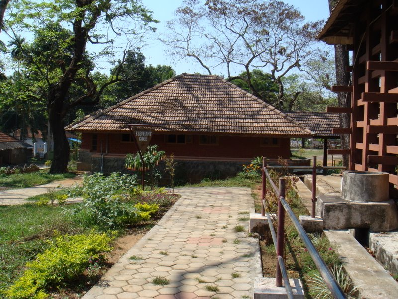
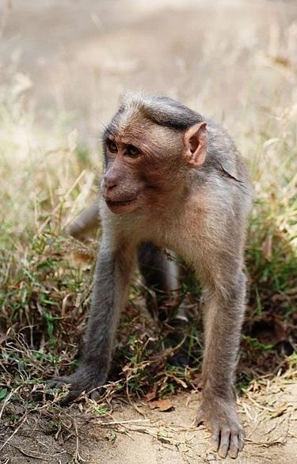
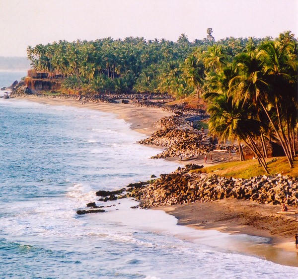

CHINNAR :
Chinnar Wildlife Sanctuary is located 18 km north of Marayoor in the Marayoor and Kanthalloor Panchayats of Devikulam Taluk in the Idukki District of Kerala state in South India.
It is under the jurisdiction of and contiguous with Eravikulam National Park to the south. Indira Gandhi Wildlife Sanctuary is to the northwest and Kodaikanal Wildlife Sanctuary is to the east.
It is one of twelve Wildlife Sanctuaries in Kerala. The Western Ghats, Anamalai Sub-Cluster, including all of Chinnar Wildlife Sanctuary, is under consideration by the UNESCO World Heritage Committee for selection as a World Heritage SiteSilent Valley National Park .
  
HOME
Acknowledgements
Bibliography